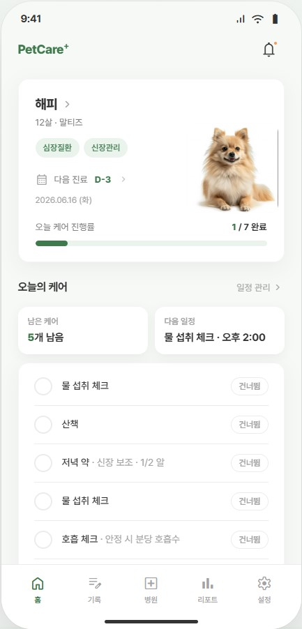
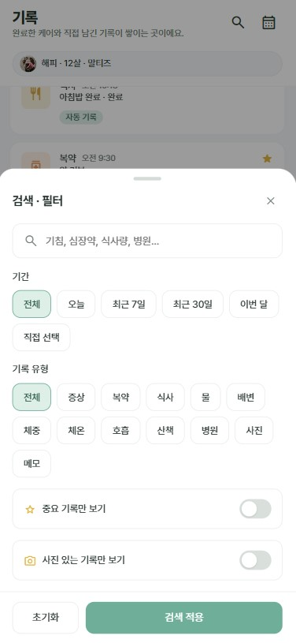
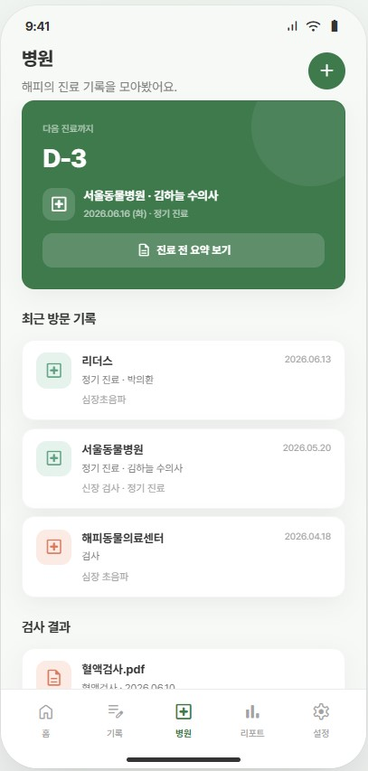
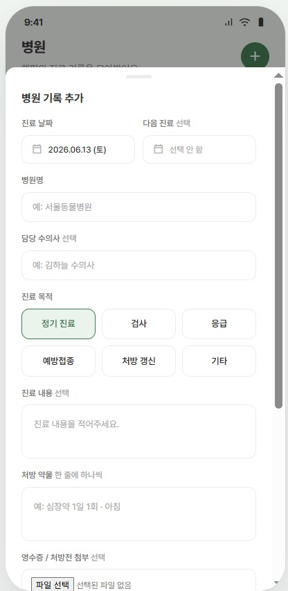
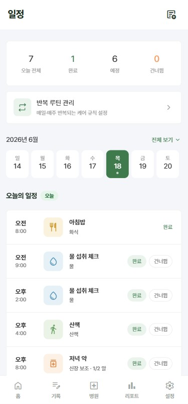

노령견 케어
"요즘 부쩍 기운이 없는데…
잘 돌보고 있는 걸까?"
반려견이 나이 들거나 꾸준한 관리가 필요해지면 보호자가 기억할 일도 많아집니다. PetCare+는 이런 케어를 한곳에 정리해줍니다.
반복 케어를 등록해두면 오늘 할 일이 홈 화면에 표시됩니다. 완료 항목은 체크하고, 남은 일정과 다음 케어 시간을 바로 확인할 수 있어요.




완료한 케어는 시간순으로 자동 저장됩니다. 언제 약을 먹였는지, 어떤 케어를 했는지 다시 확인할 수 있어요.
갑작스러운 기침·구토·식욕 저하 같은 변화는 사진이나 메모와 함께 직접 남길 수 있습니다.
진료일, 병원명, 담당 선생님, 처방 내역, 검사 결과를 한곳에 보관할 수 있습니다.
다음 진료일도 함께 관리해 병원 방문 전 필요한 내용을 쉽게 확인할 수 있어요.




복약 완료, 증상 기록, 식사 변화, 체중 변화를 주간·월간으로 확인할 수 있습니다.
PetCare+는 진단을 하는 서비스가 아니라, 보호자가 남긴 기록을 보기 쉽게 정리해주는 서비스입니다.
건강한 하루하루가 모여
오래오래 함께하는 시간이 됩니다.
매일의 케어가 필요한 모든 보호자를 위해 만들었어요.
"요즘 부쩍 기운이 없는데…
잘 돌보고 있는 걸까?"
"오늘 약 먹였던가?
또 깜빡한 건 아니겠지?"
"지난번 검사 결과가
어디 있더라…?"
"요즘 밥을 잘 안 먹는데
괜찮은 걸까?"